▲ 간절곶 소망우체통. 촬영 시기는 자료에 없다 ⓒ 한국관광공사 · 공공누리 제1유형
"새해 첫 일출을 보러 간절곶에 가려는데, 몇 시까지 도착해야 하고 차는 어디에 세우지?" 이 글은 2026년 10월 22일 기준으로 한국천문연구원 출몰시각, 울주군 문화관광 누리집, 한국관광공사 자료와 직전 해맞이 보도를 맞춰 보았다. 결론부터 말하면 2027년 1월 1일 울산의 일출은 07:32이고, 시민박명(하늘이 밝아지기 시작하는 시각)은 07:04다. 한국천문연구원 출몰시각 조회 바로가기
다만 올해(2026~2027년 시즌) 해맞이 행사 일정과 주차·교통 대책은 이 글을 쓴 시점에 공식 자료로 확인하지 못했다. 직전 시즌에는 울주군이 행사 개요를 12월 19일에, 울산경찰청이 교통 대책을 12월 30일에 내놓았다(뉴시스·KNN 보도). 올해도 비슷한 시기에 나올지는 알 수 없지만 10월 하순인 지금은 이른 편이다. 그래서 직전 두 시즌 보도에서 확인된 운영 방식을 참고용으로 정리하고, 확인 못 한 항목은 따로 표시했다.
💡 먼저 결론
2027년 1월 1일 일출은 천문연 울산 값 기준 07:32다. 직전 시즌(2025~26)에는 12월 31일~1월 1일 이틀간 행사가 열렸고 울주군은 약 10만 명이 찾았다고 추산했다. 올해 행사 일정·임시주차장·차량 통제 시각은 아직 공식 발표 자료를 확인하지 못했다. 평소에는 상시 개방·연중무휴·입장 무료(한국관광공사·울주군 안내)다.
1. 새해 첫날 일출은 몇 시? 12월~1월 날짜별 시각표
2027년 1월 1일 울산의 일출은 07:32, 일몰은 17:20이다(한국천문연구원, 지역 울산). 천문연 월별 출몰시각 조회에는 "울산" 지역만 있고 간절곶 개별 값은 없어서, 아래 표는 울산 기준임을 먼저 밝힌다.
| 날짜 | 시민박명(아침) | 일출 | 일몰 |
|---|---|---|---|
| 2026년 12월 1일 | 06:45 | 07:13 | 17:10 |
| 2026년 12월 15일 | 06:56 | 07:24 | 17:11 |
| 2026년 12월 21일 | 07:00 | 07:28 | 17:13 |
| 2026년 12월 25일 | 07:01 | 07:30 | 17:15 |
| 2026년 12월 28일 | 07:03 | 07:31 | 17:17 |
| 2026년 12월 31일 | 07:03 | 07:32 | 17:19 |
| 2027년 1월 1일 (새해 첫날) | 07:04 | 07:32 | 17:20 |
| 2027년 1월 2일 | 07:04 | 07:32 | 17:21 |
| 2027년 1월 3일 | 07:04 | 07:32 | 17:22 |
| 2027년 1월 5일 | 07:04 | 07:33 | 17:23 |
| 2027년 1월 10일 | 07:05 | 07:33 | 17:28 |
12월 초 07:13이던 일출이 12월 하순에 07:30 안팎까지 늦어졌다가, 1월 5일~10일에 07:33으로 가장 늦은 뒤 다시 앞당겨진다. 일출이 가장 늦은 날과 일몰이 가장 이른 날(12월 초순 17:09~17:10)이 서로 달라서, 동지가 지나도 한동안 아침이 계속 늦어지는 것이다.
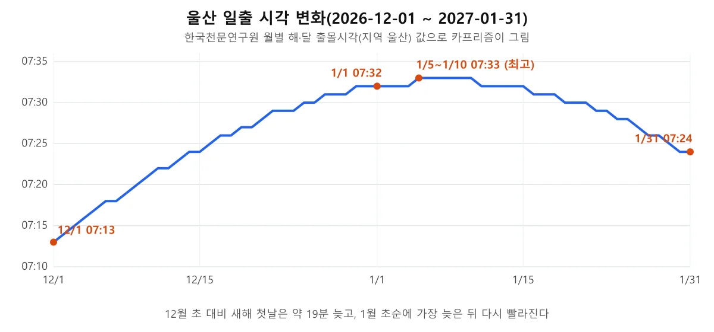
▲ 12월 1일부터 1월 31일까지 울산 일출 시각 변화. 천문연 값을 카프리즘이 그래프로 옮겼다. 카프리즘 제작, 출처=한국천문연구원
예상 시각과 실제 해가 보이는 시각은 다를 수 있다. 직전 시즌인 2026년 1월 1일에는 간절곶 일출이 예상(07:31)보다 약 4분 늦은 07:35께였다고 언론이 전했다.
| 지역(천문연 조회 지역) | 일출 | 일몰 |
|---|---|---|
| 울산 | 07:32 | 17:20 |
| 포항 | 07:33 | 17:19 |
| 강릉 | 07:40 | 17:16 |
같은 날 울산과 포항은 1분, 울산과 강릉은 8분 차이가 난다. 호미곶·정동진 값이 아니라 도시 값이라는 점은 다음 장에서 짚는다.
2. "한반도에서 가장 먼저"라는 말, 숫자로는 얼마나 차이 날까
한국관광공사 소개문은 간절곶을 한반도에서 해가 가장 먼저 떠오르는 곳으로 소개하고, 포항 호미곶보다 1분, 강릉 정동진보다 5분쯤 일찍 해가 뜬다고 설명한다. 2015년 말 언론 보도에는 호미곶보다 1분, 정동진보다 7분으로 적혀 있어 자료마다 정동진과의 차이가 다르다.
| 자료 | 호미곶과 차이 | 정동진과 차이 |
|---|---|---|
| 한국관광공사 간절곶 소개(2025-12 수정본) | 1분 일찍 | 5분 일찍 |
| 2015-12-28 언론 보도(2016년 일출 기준) | 1분 일찍 | 7분 일찍 |
| 천문연 도시 값(2027-01-01) | 포항 07:33, 울산 07:32 → 1분 | 강릉 07:40, 울산 07:32 → 8분 |
정동진과의 차이가 5분, 7분, 8분으로 갈리는 것은 기준 연도와 지점(도시 값인지 현지 좌표인지)이 자료마다 다르기 때문으로 보이며, 차이의 크기보다 "간절곶이 먼저"라는 순서가 같다는 점이 확인된다. 이 글은 어느 숫자 하나를 단정하지 않는다.
간절곶은 1999년 국립천문대(현 한국천문연구원)와 새천년준비위원회가 2000년 새해 첫 해가 한반도 육지에서 가장 먼저 뜨는 곳으로 발표하며 알려졌다. 대왕암공원도 해가 가장 빨리 뜨는 곳 가운데 하나로 소개되니, 대왕암 쪽 일정은 대왕암공원 출렁다리·울기등대 겨울 산책 기사에서 따로 확인하자.
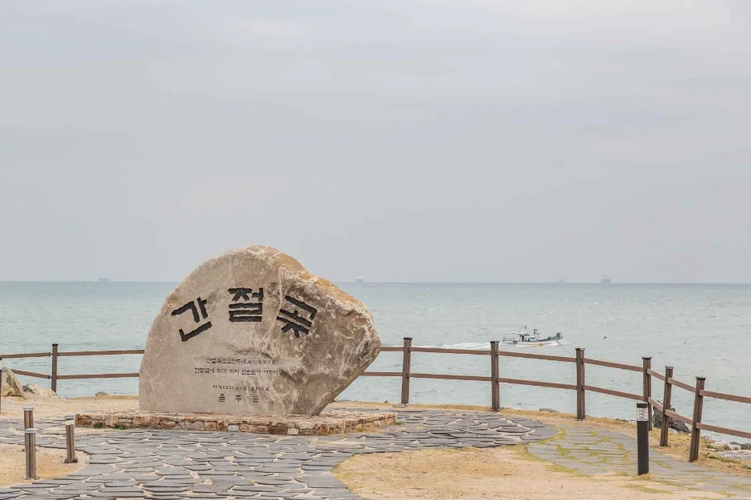
▲ 간절곶 표지석. 촬영 시기는 자료에 없다. ⓒ 한국관광공사 · 공공누리 제1유형
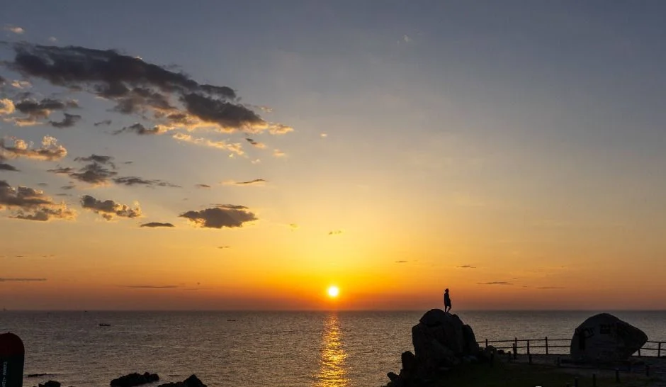
▲ 수평선 위 해와 바위 해안. 일출·일몰 구분과 촬영 시기는 자료에 없다. ⓒ 한국관광공사 · 공공누리 제1유형
3. 소망우체통은 어디까지 "세계 최대"일까 — 엽서는 어디서 받나
간절곶 소망우체통은 엽서를 넣으면 실제로 배달되는 우체통이고, 한국관광공사 소개문에는 간절곶해올제(울주군 특산품 판매장)에서 무료 엽서를 나눠 준다고 적혀 있다. 크기는 자료마다 표현이 다르다.
| 항목 | 내용 | 근거 |
|---|---|---|
| 크기 | 한국관광공사는 "세계 최대 크기", 2012년 지역 언론은 "높이 5m·가로 2.4m·세로 2m, 무게 약 7t"로 보도, 2015년 서울신문은 높이 5m·폭 2.4m로 적음. 2015년 이투데이는 "우리나라에서 가장 큰 우체통"으로 표현 | 한국관광공사·시대일보(2012-01-07)·서울신문(2015-12-29)·이투데이 |
| 설치 | 2006년 12월 22일 설치(2015년 서울신문 보도) | 서울신문 |
| 엽서 | 간절곶해올제에서 무료 배부(2015년 보도는 1인 1매) | 한국관광공사·이투데이 |
| 배달 방식 | 엽서를 넣으면 전국 배달. 2015년 보도에는 남울산우체국이 정기 수거해 일반 우편으로 배달 | 한국관광공사·이투데이 |
| 해올제 운영시간·엽서 소진 여부 | 공식 자료에서 확인하지 못함 | — |
"세계 최대"와 "우리나라에서 가장 큰"이 갈리는 것은 비교 범위를 어디까지 잡았는지가 자료마다 다르기 때문으로 보인다. 높이 5m·폭 2.4m는 2012·2015년 두 언론 보도가 같고, 세로 2m·약 7t은 2012년 보도에만 있다. 울주군 문화관광 누리집에는 크기 설명이 없어 현재 공식 수치는 확인하지 못했다. "세계 최대"는 이 글이 확인한 언론 자료에서 근거를 찾지 못한 표현이므로, 크기를 말할 때는 "국내에서 가장 큰 편" 정도로 받아들이는 것이 안전하다. 새해 첫날 엽서 소진 여부는 현장 확인이 필요하다.
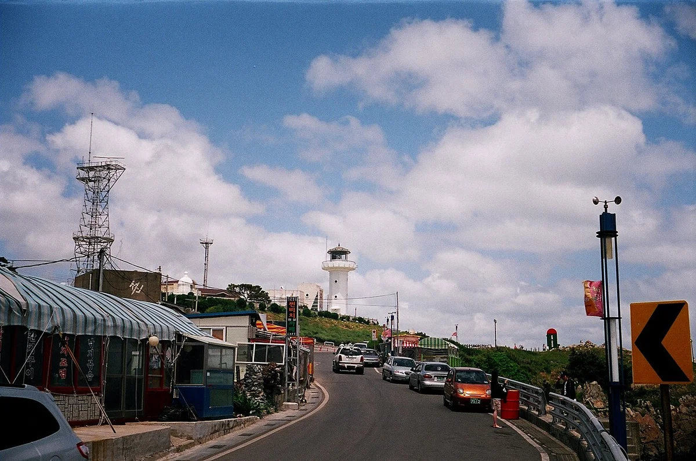
▲ 도로 너머 언덕 위로 보이는 흰색 간절곶 등대와 오른쪽 끝의 초록색 우체통 모양 구조물. 2009년 2월 Panoramio에 올라온 옛 사진이라 지금의 가게·시설 배치와 다를 수 있다. ⓒ 유리오빠(Panoramio) · CC BY 3.0 · Wikimedia Commons
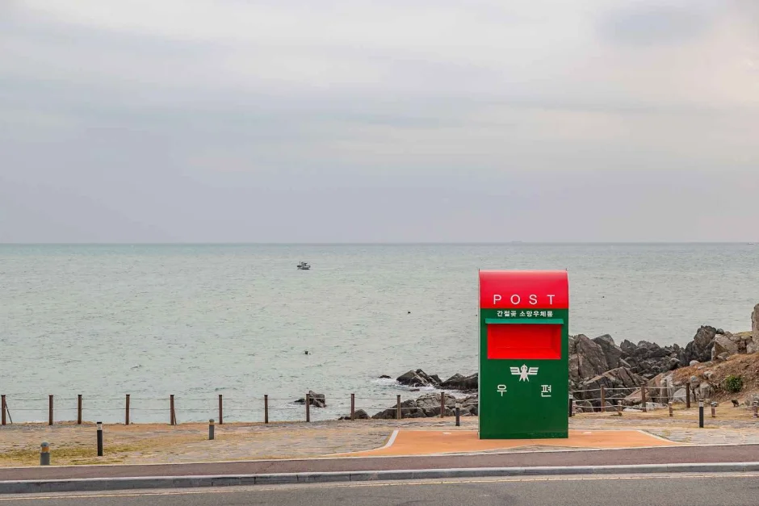
▲ 낮 시간대로 보이는 소망우체통. 촬영 시기는 자료에 없다. ⓒ 한국관광공사 · 공공누리 제1유형
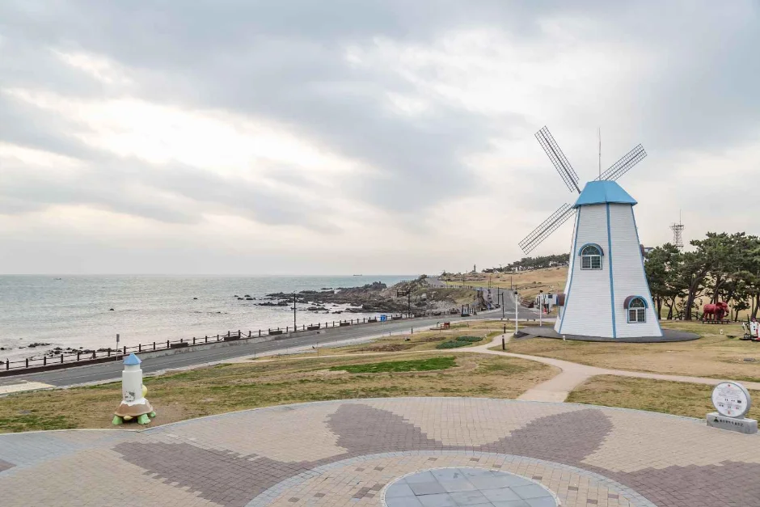
▲ 간절곶 공원의 풍차 모양 건물. 촬영 시기는 자료에 없다. ⓒ 한국관광공사 · 공공누리 제1유형
4. 새해 해맞이 행사·임시주차장·셔틀 — 직전 시즌에 확인된 것
직전 시즌에는 12월 31일~1월 1일 이틀간 열렸고, 한국관광공사 행사 정보에는 (재)울주문화재단·울산문화방송이 담당(문의 052-980-2232, 무료)으로 올라 있다. 올해 행사 개최 여부와 일정은 확인하지 못했다.
| 항목 | 확인한 내용 | 근거 |
|---|---|---|
| 기간·주제 | 2025-12-31~2026-01-01, "간절곶, 한반도의 첫 아침을 열다" | 헤럴드경제·한국관광공사 |
| 송년 콘서트 | 12/31 21:30~1/1 00:15, 지역 예술인·김희재·황윤성 | 헤럴드경제 |
| 새벽 프로그램 | 1/1 05:00 이후 드론 1,500대 라이트쇼·불꽃쇼, 식전공연, 소망 인터뷰 | 헤럴드경제 |
| 전시 | 야간경관 "적설(赤雪)", 공공미술 "개화(開花)" | 헤럴드경제 |
| 인파 | 사전 예상 약 13만 명(전국 245개 해맞이 명소 중 최다), 1월 1일 새벽 실제 울주군 추산 약 10만 명 | 헤럴드경제·트윅24 |
| 임시주차장 | 온양체육공원, 신한중공업주차장, 진하공영주차장, 진하해수욕장 일원, 에너지융합산업단지 주차장, 한국수력원자력 새울본부 주차장 | 헤럴드경제 |
| 셔틀버스 | 주차장마다 배정, 새울본부 출발 3번 노선은 서생역 경유. 울산경찰청 자료에는 행사장·온양체육공원·에너지산단 일대 등 주요 거점을 잇는 것으로 소개. 운행 시각·배차 간격은 확인하지 못함(직전 시즌 무료 운행 계획은 트윅24 보도) | 헤럴드경제·KNN·트윅24 |
| 교통 통제 | 현장 경찰 약 90명이 교통 통제·안전 관리(트윅24). 울산경찰청은 간절곶·울산대공원·대왕암 3곳에 경력 187명을 배치하고 간절곶 예상 인파를 약 13만 명(3곳 합계 약 17만 명)으로 봄. 통제 시각은 아래 표 참고 | 트윅24·KNN(2025-12-30, 울산경찰청·울주군) |
| 부대행사·안전 대책 | 떡국 나눔, 울주군 홍보관, 체험부스, 푸드트럭 운영. 행사안전·교통안전·행사안내지원반 3개 반과 상황실 4곳 편성, 울산해경·진하파출소는 해상 사고 대비 | 뉴시스(울주군 발표, 2025-12-19) |
주차장이 여섯 곳으로 흩어지고 셔틀이 붙는 것은 약 10만 명이 한 곳에 몰리기 때문으로 보이며, 아래는 그에 맞춰 경찰이 단계적으로 걸어 둔 통제 시각이다.
| 시각 | 통제 내용 |
|---|---|
| 12월 31일 18:00 | 간절곶 행사장 안으로 차량 진입 전면 통제 |
| 12월 31일 22:00 | 진하교·구 서생초 삼거리 일대 통제 |
| 1월 1일 03:00 | 서생 교차로·강양 교차로·심암 교차로 일대로 통제 확대 |
| 1월 1일 05:00 | 원전 교차로·당원 교차로·남부노인복지센터 일대로 통제 확대 |
통제는 시간이 지날수록 바깥으로 넓어지는 방식이어서, 일출 시각인 07:32보다 한참 앞서 차량으로 행사장 안까지 들어가는 길은 막힌다. 올해 시각은 같지 않을 수 있으므로 12월 말 울산경찰청·울주군 공지로 확인해야 한다.
| 항목 | 2023~24 시즌 | 2025~26 시즌 |
|---|---|---|
| 새해 아침 행사 시작 | 1월 1일 05:30부터, 드론 1,000대·불꽃쇼 | 1월 1일 05:00 이후, 드론 1,500대·불꽃쇼 |
| 송년 행사 | 12월 31일 20:40~00:10 | 12월 31일 21:30~00:15 |
| 임시주차장(셔틀 탑승) | 5곳(온양체육공원·신한중공업·진하공영·새울본부·에너지산단) | 6곳(온양체육공원·신한중공업·진하공영·진하해수욕장 일원·에너지산단·새울본부) |
| 셔틀 | 4개 노선(31번 국도 개통에 따라 에너지산단 방향 신설), 75대에서 115대로 증차, 셔틀·귀가 합계 333회 | 주차장마다 배정, 새울본부 3번 노선은 서생역 경유. 대수·횟수는 확인하지 못함 |
| 주차 면수 | 행사장 안팎 4,814면에서 5,870면으로 확대 | 확인하지 못함 |
두 시즌 모두 행사 시작은 일출 2시간 반 전이고 임시주차장은 행사장에서 떨어진 곳에 둔다는 점이 같다. 출처는 2024년 행사는 뉴스서울, 2026년 행사는 헤럴드경제·뉴시스다. 시즌마다 드론 수와 주차장이 조금씩 바뀌는 것으로 보아 올해 구성도 확정 전에는 단정하기 어렵다.
당시 새벽 6시 현장 기온은 영하 4.2도까지 내려갔고 바닷바람도 불었다는 보도가 있다(트윅24). 임시주차장이 6곳이고 셔틀이 주차장마다 붙는 것은 인파가 10만 명 안팎으로 몰리기 때문으로 보이지만, 이는 공식 설명이 아니라 카프리즘의 추정이다. 올해도 같은 방식일지는 12월 말 울주군·경찰 공지로 확인해야 한다. 2026년 10월 22일 현재 2027년 행사 발표는 검색으로 찾지 못했고, 직전 시즌 행사 개요는 2025년 12월 19일에야 울주군이 공개했다.
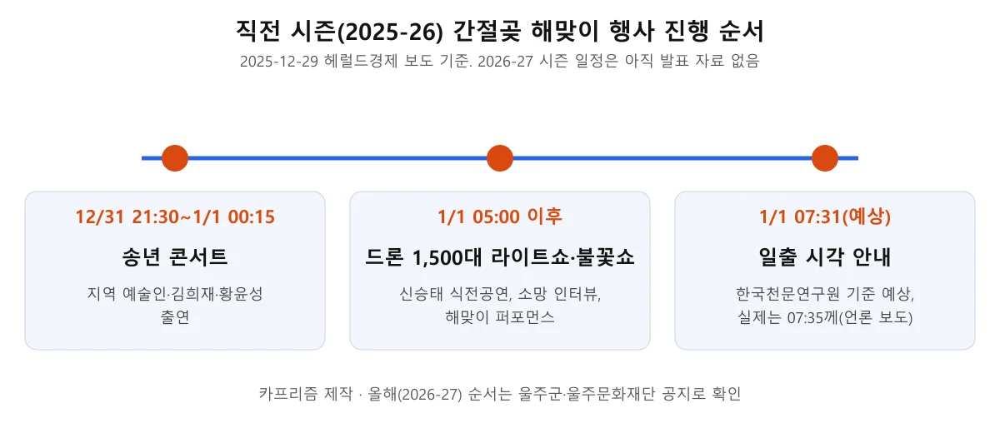
▲ 직전 시즌 행사 진행 순서. 올해 순서는 별도 공지 확인이 필요하다. 카프리즘 제작, 출처=헤럴드경제(2025-12-29)
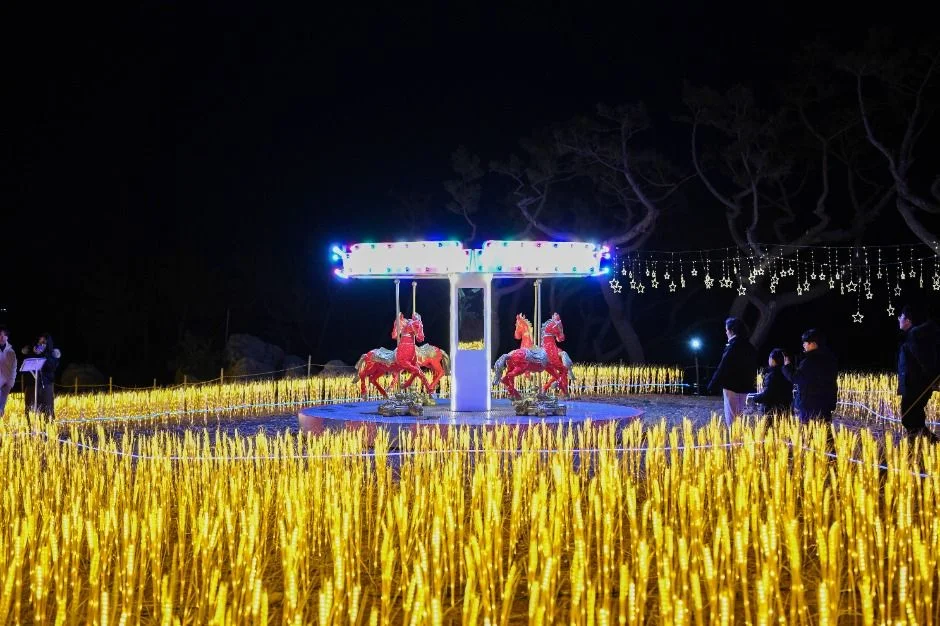
▲ 한국관광공사에 "2026 울주 간절곶 해맞이 축제" 사진으로 올라 있는 야간 경관 조명. 촬영 장소 세부는 자료에 없다. ⓒ 한국관광공사 · 공공누리 제3유형(변경금지)
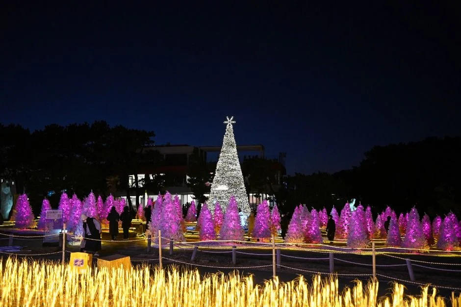
▲ 같은 행사 사진 묶음의 야간 조명 장면. 촬영 장소 세부는 자료에 없다. ⓒ 한국관광공사 · 공공누리 제3유형(변경금지)
5. 행사 없는 날 이용 정보 — 개방·요금·문의처
한국관광공사 정보로는 간절곶은 상시 개방, 연중무휴, 주차 가능이고, 울주군 문화관광 누리집 안내로는 입장료가 무료다. 문의는 울주군 산림공원과 공원팀(052-204-1751~1756)이다. 울주군 문화관광 간절곶 안내 바로가기
| 항목 | 내용 | 근거 |
|---|---|---|
| 주소 | 울산 울주군 서생면 간절곶1길 39-2 | 한국관광공사 |
| 이용시간·휴무 | 상시 개방, 연중무휴 | 한국관광공사 |
| 입장료 | 무료 | 울주군 문화관광 |
| 주차 | 가능(한국관광공사). 울주군 간절곶 안내 페이지에는 주차 항목이 없고, 평소 주차면 수·요금은 공식 자료에서 확인하지 못함 | 한국관광공사·울주군 |
| 문의 | 울주군 산림공원과 공원팀 052-204-1751~1756 | 한국관광공사·울주군 |
| 간절곶등대 | 한국관광공사는 1920년대에 세워진 등대로, 울주군은 일제강점기부터 있던 등대로 소개. 홍보관 등 내부 운영시간은 두 곳 모두 안내하지 않아 확인하지 못함 | 한국관광공사·울주군 |
울주군 안내 페이지의 "오시는 길" 항목은 제목만 있고 내용이 비어 있어, 대중교통 노선은 공식 자료로 확인하지 못했다. 비공식 여행 안내에는 울산 공업탑에서 남창·간절곶·서생을 거쳐 고리 방면으로 가는 시내버스(배차 약 40분)가 소개되지만 노선 번호와 현행 시각표는 확인되지 않았다. 새해 첫날에는 행사 셔틀과 도로 통제로 평소 노선이 달라질 수 있으니, 지도 앱의 길찾기나 울주군 문의처로 당일 노선을 확인하자.
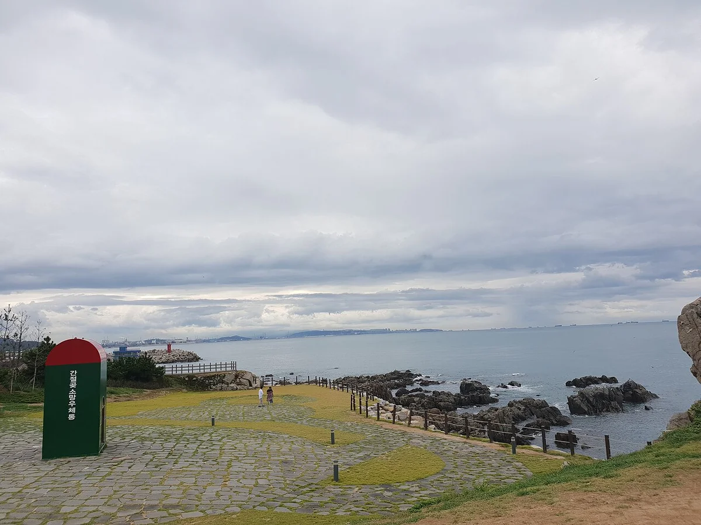
▲ 흐린 하늘 아래 바다를 향한 간절곶 해안 광장. 2018년 8월 16일 촬영, 겨울 모습이 아니다. ⓒ Choi2451 · CC BY-SA 4.0 · Wikimedia Commons
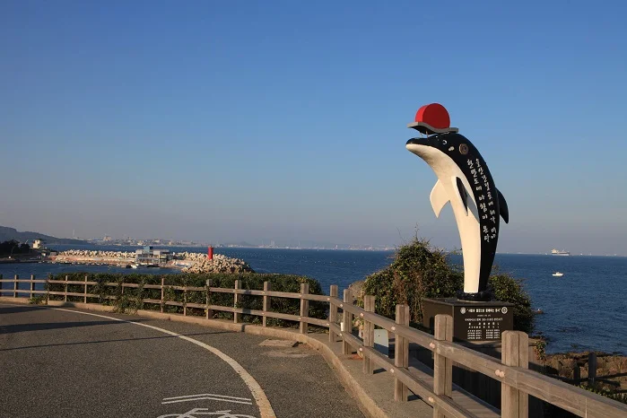
▲ 한국관광공사가 간절곶 소망길(해안 산책로)로 소개하는 사진. 고래 모양 조형물이 보인다. 촬영 시기는 자료에 없다. ⓒ 한국관광공사 · 공공누리 제3유형(변경금지)
6. 새벽 몇 시에 도착해야 할까 — 박명·일출 시각으로 짜 보면
공식 도착 권장 시각은 확인하지 못했다. 시각표만 놓고 보면 일출 07:32보다 28분 이른 07:04에 하늘이 밝아지기 시작하므로, 해 뜨기 전 하늘색 변화까지 보려면 박명 시작 전후에는 자리를 잡아 두는 편이 낫다. 아래는 카프리즘의 정리이지 공식 안내가 아니다.
| 시각 | 의미 | 확인 |
|---|---|---|
| 07:04 | 시민박명 시작(하늘이 밝아지기 시작) | 한국천문연구원 |
| 07:32 | 울산 일출(간절곶 개별 값은 확인하지 못함) | 한국천문연구원 |
| 일출 전 이동 | 직전 시즌에는 임시주차장+셔틀 방식. 올해 통제 시각 미확인 | 헤럴드경제 |
| 새벽 기온 | 직전 시즌 1월 1일 06시께 영하 4.2도까지 하락(바닷바람 동반). 새해 첫날 평년 기온은 공식 자료로 확인하지 못함 | 트윅24 |
| 일출 후 | 귀가 차량이 한꺼번에 몰릴 수 있음. 공식 혼잡 예보는 확인하지 못함 | — |
바닷가는 같은 기온에서도 바람 때문에 더 춥게 느껴지므로, 대기 시간이 길어질 것을 염두에 두고 방한 준비를 하는 편이 낫다. 이 문장은 공식 자료가 아니라 일반적인 안전 안내다. 직전 시즌에는 일출 전 05:00부터 행사가 이어졌으므로 해 뜨기 전 2~3시간을 야외에서 보내게 될 수 있다는 점은 위 시각표에서 읽을 수 있다.
일출 시각 숫자는 다른 방법으로도 맞춰 보았다. 카프리즘이 일반 천문 계산식(해 상단 기준, 대기 굴절 반영)으로 간절곶 좌표(북위 약 35.36도, 동경 약 129.36도)의 2027년 1월 1일 일출을 따로 계산하자 07:32가 나와 천문연 울산 값과 같았다. 이는 공식 값이 아닌 검산이며 1분 안팎 오차가 있을 수 있다.
7. 일출 뒤 이어 가기 — 진하해수욕장과 대왕암·호미곶
한국관광공사는 간절곶 인근에 진하해수욕장, 서생포왜성, 나사봉수대, 온양옹기마을이 있다고 소개한다. 진하해수욕장은 직전 시즌 임시주차장 후보에도 올랐고, 여름에는 울산에서 가장 사람이 많이 몰리는 해변이라는 설명이 붙어 있다.
진하해수욕장 앞 명선도에는 야간조명이 있고, 울주군이 밝힌 2023년 11월 보도 기준 동절기(10~2월) 운영 시간은 18:00~22:00, 월요일과 기상 악화 시에는 켜지 않는다. 새해 아침 일정과는 시간대가 다르고 현행 시간은 달라졌을 수 있어 울주군 확인이 필요하다. 간절곶 일대 먹거리는 공식 자료로 확인된 곳이 없어 적지 않았고, 직전 두 시즌 행사 때는 떡국이 나눠졌다는 보도만 확인된다(2025~26 시즌 배부 시각은 미확인).
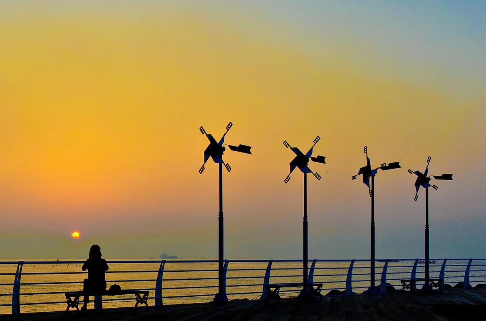
▲ 수평선 위 해와 풍차 모양 조형물 실루엣. 작성자 설명은 울산 진하 일대에서 2016년 8월 6일 05:37에 촬영한 일출이라고 적고 간절곶을 태그로 달았다. 정확한 지점은 확정하기 어렵다. ⓒ Jh Jung · CC BY 3.0 · Wikimedia Commons
일출 뒤 동구 쪽으로 이동한다면 대왕암공원 겨울 산책 기사에서 출렁다리 운영 조건을, 해안도로 코스는 경주~울산 31번 해안 드라이브 기사에서 볼 수 있다. 호미곶·정동진 일출을 비교하려면 영덕 블루로드~호미곶 해안 드라이브 기사와 정동진 일출 기사를 참고하자.
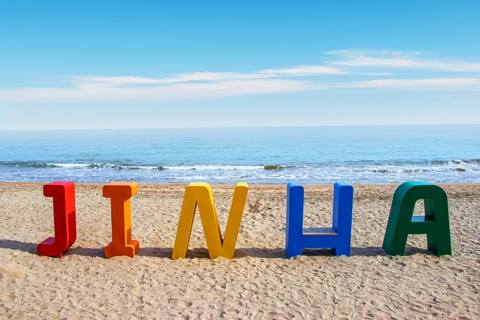
▲ 인근 진하해수욕장의 JINHA 글자 조형물. 간절곶 사진이 아니며 촬영 시기는 자료에 없다. ⓒ 한국관광공사 · 공공누리 제1유형
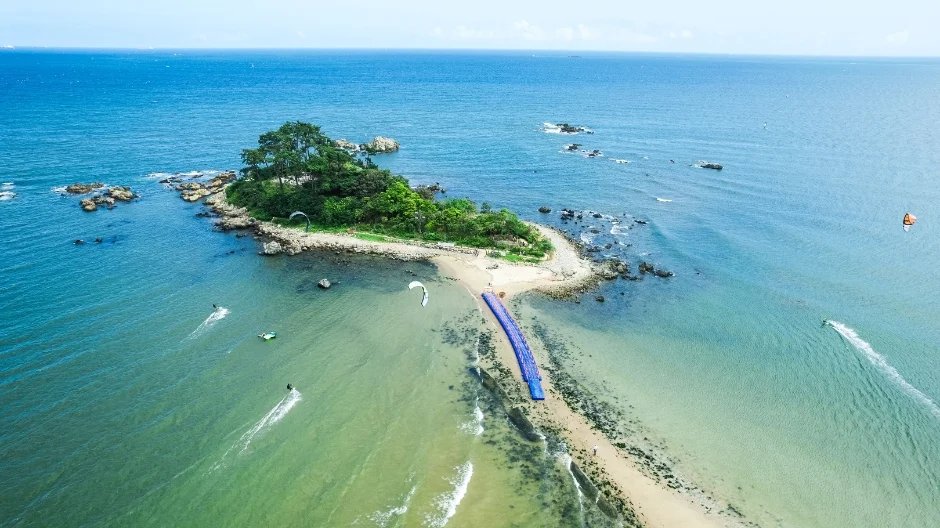
▲ 인근 진하해수욕장 일대를 위에서 본 장면. 간절곶 사진이 아니며 촬영 시기는 자료에 없다. ⓒ 한국관광공사 · 공공누리 제1유형
✅ 출발 전 체크
1) 2027-01-01 울산 일출 07:32, 시민박명 07:04(간절곶 개별 값 아님) 2) 올해 해맞이 행사·임시주차장·차량 통제 시각은 울주군·(재)울주문화재단(052-980-2232) 공지로 확인 3) 평소 간절곶은 상시 개방·무료이며 문의는 052-204-1751~1756 4) 직전 시즌에는 일출이 예상보다 4분 늦었고 새벽 기온은 영하 4.2도까지 내려갔다 5) 직전 시즌 간절곶 행사장 차량 진입은 12월 31일 18:00부터 통제됐다 6) 사진은 한국관광공사 사진 대부분 촬영 시기가 자료에 없다.
8. 정리
2027년 1월 1일 울산 일출은 07:32(천문연 울산 값)이고, 시민박명은 07:04다. 직전 시즌에는 12월 31일~1월 1일 행사와 임시주차장 6곳·셔틀 운영이 확인됐고 울주군 추산 방문객은 약 10만 명이었다. 평소에는 상시 개방, 입장 무료다.
올해 행사 일정·임시주차장·셔틀 시각·차량 통제 시각, 소망우체통의 현행 공식 크기, 해올제와 등대 홍보관 운영시간, 간절곶 개별 일출 공식 값, 평소 주차 면수·요금, 공식 버스 노선은 확인하지 못했다. 이 기사는 2026년 10월 22일 기준이므로 12월 말 울주군 공지로 다시 확인하자. 울주군 누리집 바로가기